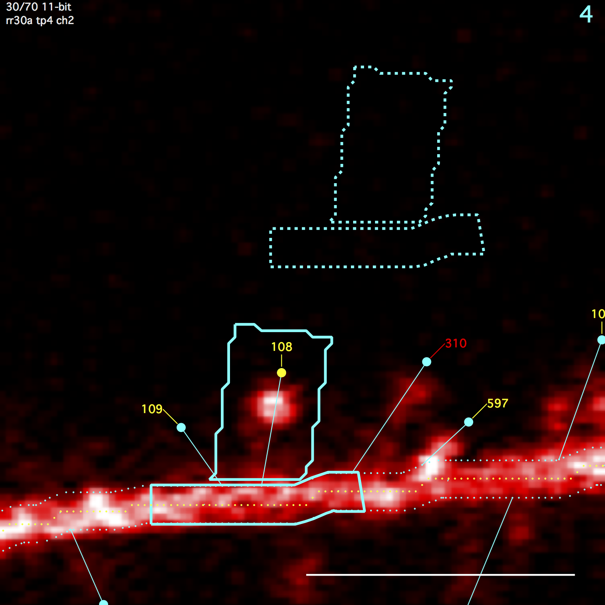
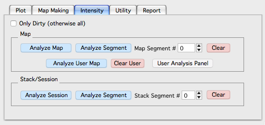
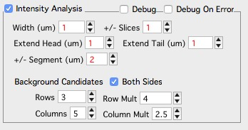
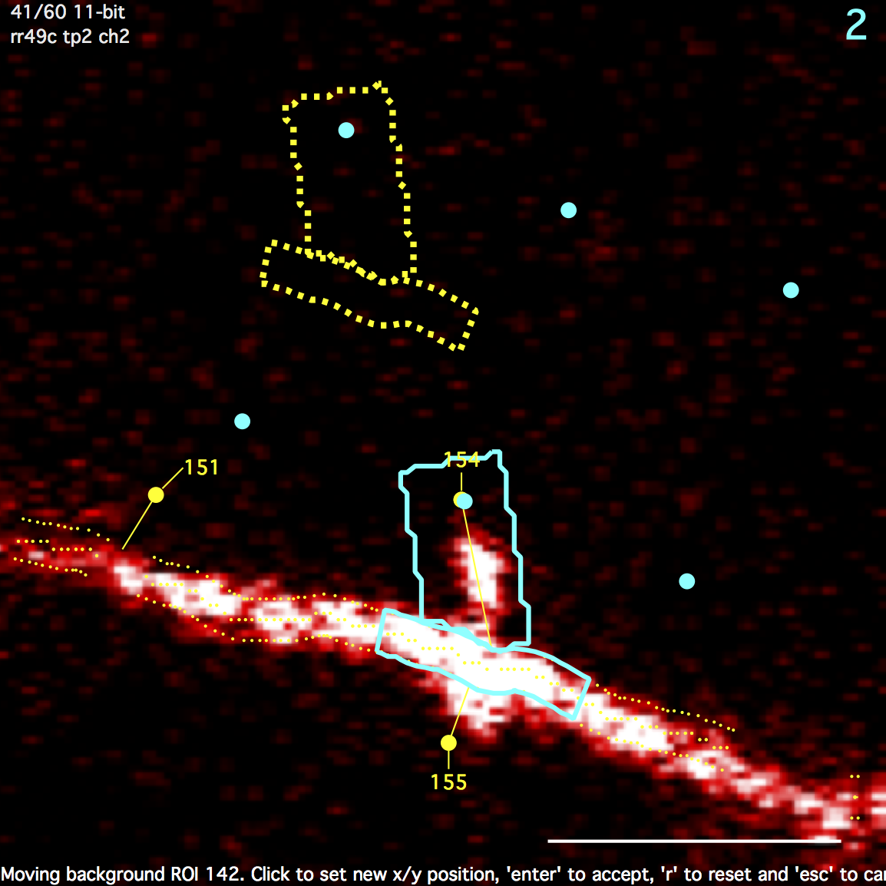

Intensity
Algorithm and Strategy
All intensity analysis is performed by calculating statistics (Sum, Mean, standard-deviation, N) from the intensity values of pixels within a number of 3D regions-of-interest (ROI). Further analysis is then derived by performing algebra between these ROIs.

Spine ROI
A polygon surrounding a spine. Starts as a rectangle and then overlapping regions of the backbone/dendrite ROI is subtracted. Any remaining disjoint regions (on other side of backbone/dendrite) are then removed. The spine ROI is centered in the same image plane as the spine head. Three parameters specify spine ROI: width, extend head, and extend tail.
Backbone/Dendrite ROI
A polygon centered on the spine connection point and extending a fixed distance (um) up and down the backbone/dendrite line. The backbone/dendrite ROI is centered in the same image plane as the spine connection point. The distance to extend up and down the backbone/dendrite line is set with '+/- Segment (um)'
Background ROI
Both the spine roi and the backbone/dendrite roi get their own background ROIs. The spine background ROI is the same size/shape as the spine ROI. Likewise, the backbone/dendrite background ROI is the same size/shape as the backbone/dendrite ROI. The position of these background ROIs is the position that gives the minimal intensity from a number of candidate positions (a 3x3 grid emanating from the spine head). All background ROIs (both spine and backbone/dendrite) are centered in the same image plane as the spine head.
Please note, parameters controlling the grid of candidate background positions is not exposed to the user.
Running Intensity Analysis

Intensity analysis is run from the main map manager panel using the 'Intensity' tab.
Parameters

Intensity analysis parameters are set in the stack db options panel. They can also be set independently for each spine using the 'Object Info' panel (in a stack window, use keyboard 'i' to toggle the Object Info Panel)
- Spine width (um). Width of spine ROI centered on the spine line.
- Extend head (um). Distance to extend the spine ROI beyond its spine head.
- Extend tail (um). Distance to extend the spine ROI beyond it connection point with the backbone/dendrite..
- +/- Slices. The statistics (Sum, Mean, SD, N) of each spine, backbone, and background ROI is calculated after expanding the ROI up and down in Z-dimension.
- +/- Segment (um). The distance (um) to extend the backbone/dendrite ROI up and down the backbone/dendrite line.
Intensity Analysis Output
The following statistics are calculated and displayed in the X/Y statistics lists in the Plot Panel.
A table of these statistics can be displayed for each stack in the stack db panel. To do this: (1) in a stack window, open the stack db panel with keyboard '[', (2) click on the point list and (3) use keyboard 'i' for intensity.
Please note, 'u' is for user. User stats are simple algebra on the core intensity analysis.
Spine ROI
sSum : spine sum
sMean : spine mean
sSD : spine standard deviation
sN : # pixels in spine roi
Spine Background ROI
sbSum : spine background sum
sbMean : spine background mean
sbSD : spine background standard deviation
sbN : # pixels in spine background roi
Backbone/Dendrite ROI
dSum : dendrite sum
dMean : dendrite mean
dSD : dendrite standard deviation
dN : # pixels in dendrite roi
Backbone/Dendrite Background ROI
dbSum : dendrite background sum
dbMean : dendrite background mean
dbSD : dendrite background standard deviation
dbN : # pixels in dendrite background roi
Background subtracted ROIs
ubssSum : background subtracted spine sum
ubssMean : background subtracted spine mean
ubsdSum : background subtracted dendrite sum
ubsdMean : background subtracted dendrite mean
Cross channel stats
utssmoss : this spine sum minus other spine sum. This can be read as '(t)his (s)pine (s)um (m)inus (o)ther (s)pine sum'
utsmmosm : this spine mean minus other spine mean
utssdoss : this spine sum divided by other spine sum
utsmdosm : this spine mean divided by other spine mean
utssmods : this spine sum minus other dendrite sum
utsmmodm : this spine mean minus other dendrite mean
utssdods : this spine sum divided by other dendrite sum
utsmdodm : this spine mean divided by other dendrite mean
Moving the background ROI
Clicking on the spine backgrond ROI will enable an edit mode where the user can specify the background position. This edit mode also shows the candidate background positions.
- Mouse-Click to set a new position.
- 'Enter' to accept new position.
- 'r' to reset spine position. A new position will automatically be chosen next time spine is analyzed.
- 'esc' to cancel move
